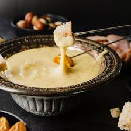
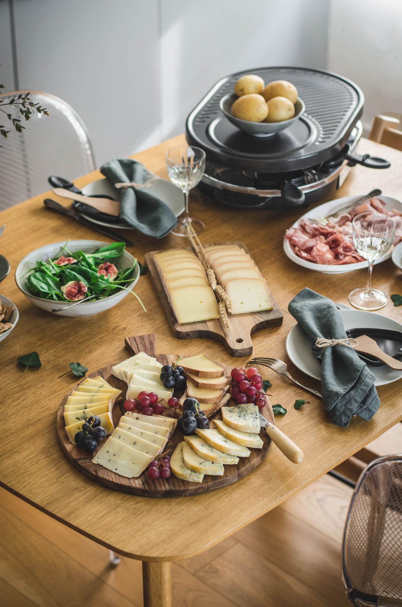
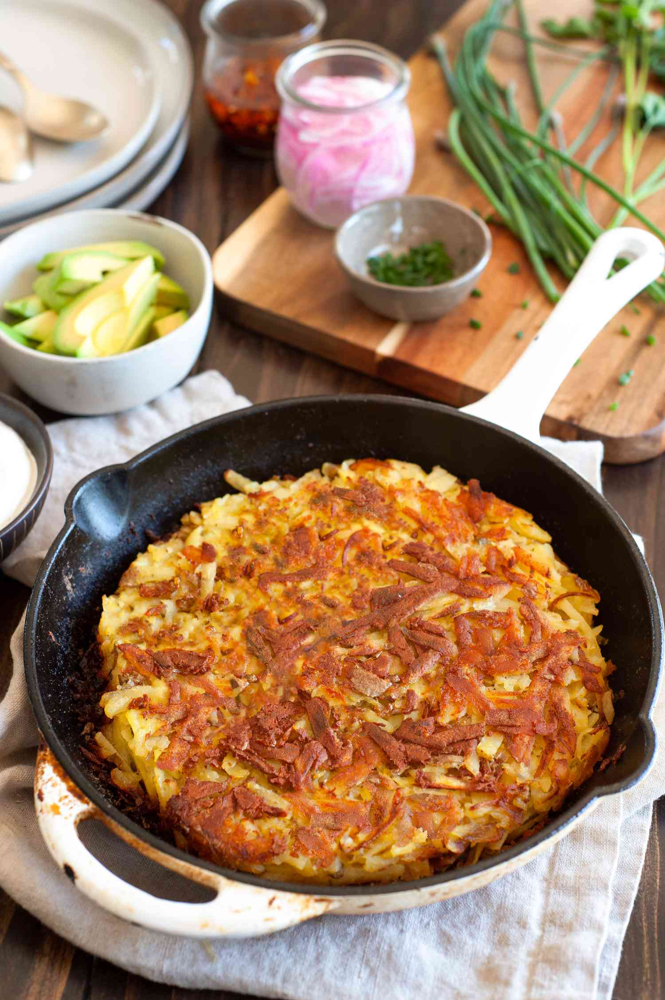
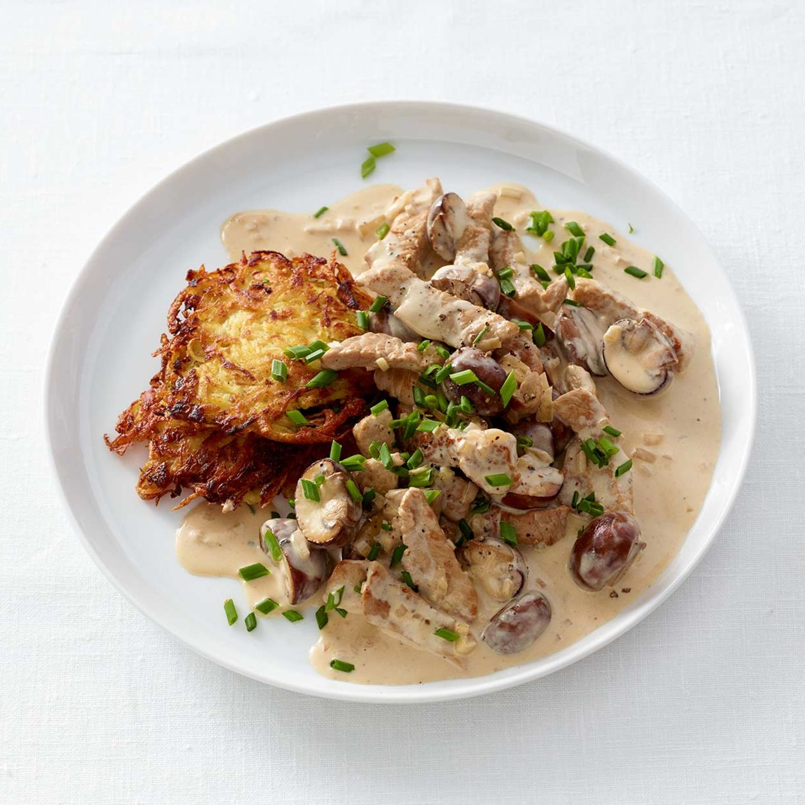

The Heart of Alpine Cuisine
Swiss cuisine is a delightful reflection of the country's diverse cultural landscape, drawing significant influences from its neighbors: Germany, France, and Italy. As a result, Swiss food is a fascinating mosaic of hearty mountain comfort, refined flavors, and sunny Mediterranean ingredients, all tied together by world-famous Swiss cheese and chocolate.
Iconic National Comfort Foods
1. Cheese Fondue
The ultimate communal dish. Fondue is a pot of melted cheese (typically Gruyère and Vacherin Fribourgeois) mixed with white wine, garlic, and a splash of Kirsch.

- How to Eat: Dip cubes of crusty bread using long forks.
- Pairing: Dry white wine or hot tea.
2. Raclette
More than a meal, it's an experience. Raclette involves melting a block or slices of Raclette cheese and scraping the soft, melted layer onto boiled potatoes.

- Accompaniments: Pickled onions, gherkins (cornichons), and various cured meats.
- Origin: Canton of Valais.
3. Rösti
A crispy, fried potato cake made from coarsely grated, cooked or raw potatoes, often served as a side dish or main course.

- German-Swiss Staple: Historically a breakfast dish of Bernese farmers.
- Variations: Often topped with fried eggs, bacon, or melted cheese (Rösti Valaisanne).
4. Zürcher Geschnetzeltes
Translated as 'sliced meat Zurich style,' this elegant dish features thinly sliced veal cooked in a creamy, white wine and mushroom sauce.

- Serving Suggestion: Traditionally served with crispy Rösti or rice.
- Region: Zurich (German-speaking Switzerland).
Regional Specialties & Sweet Delights
Älplermagronen (Alpine Macaroni)
The Swiss version of macaroni and cheese, this hearty mountain dish combines pasta (like Hörnli), potatoes, cream, and cheese. It is traditionally topped with caramelized onions and, surprisingly, often served with a side of apple sauce for a sweet and savory contrast.
Ticinese Polenta & Risotto (Italian Influence)
In the Italian-speaking canton of Ticino, you'll find Mediterranean flavors. Polenta (slow-cooked cornmeal) and Saffron Risotto are staples, often served with local sausages (like Luganighe) or hearty stews.
Bündner Nusstorte (Grisons Nut Tart)
A rich dessert from the Romansh-speaking region of Graubünden. This crumbly shortcrust pastry is filled with caramelized sugar, cream, and crunchy walnuts—a truly decadent treat, perfect with coffee.
Birchermüesli
A world-famous breakfast or snack invented around 1900 by Swiss physician Dr. Maximilian Bircher-Benner. It consists of rolled oats, nuts, and fresh grated fruit, soaked in milk or yogurt—a nutritious staple.